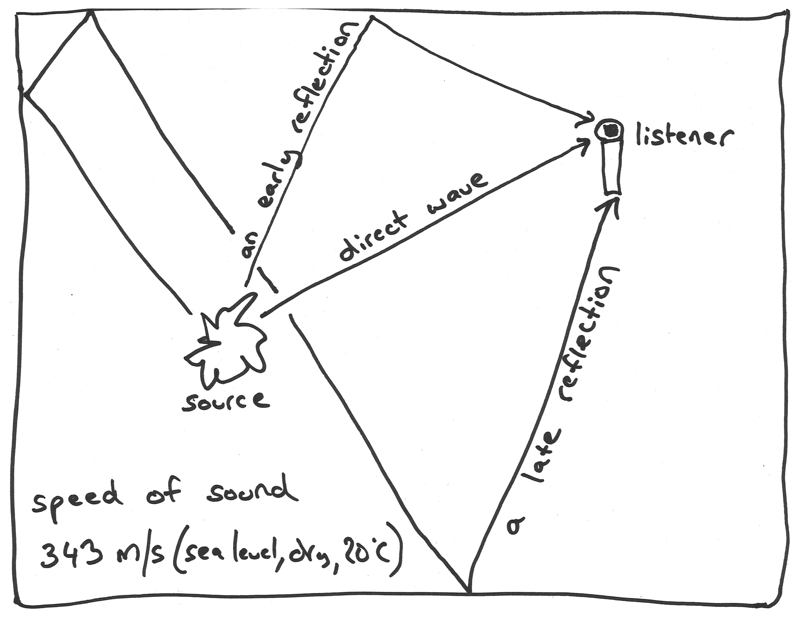
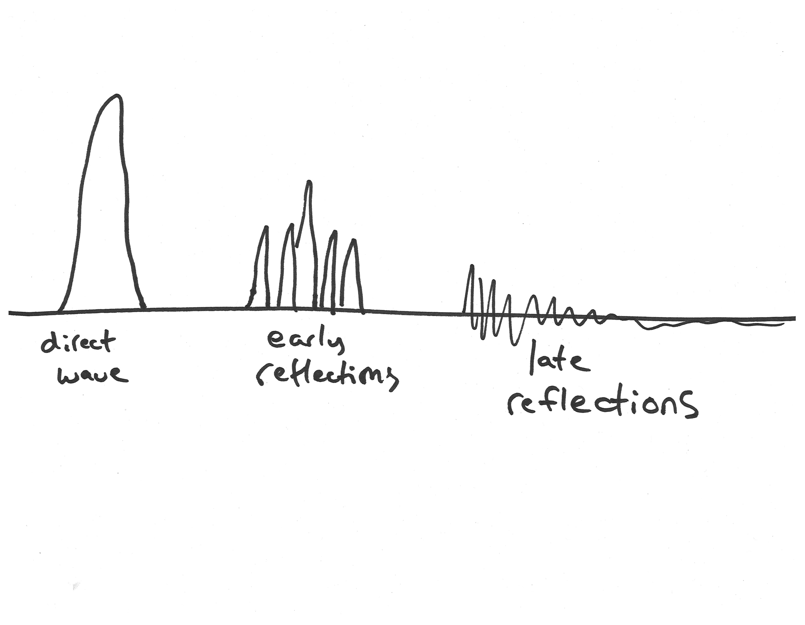
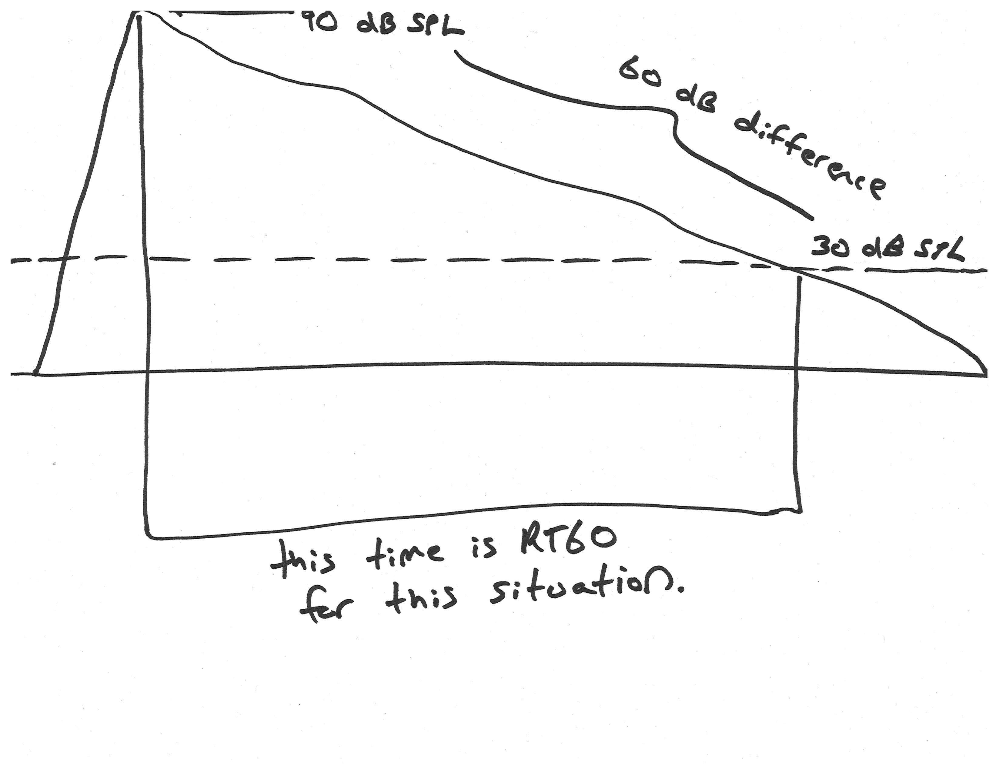
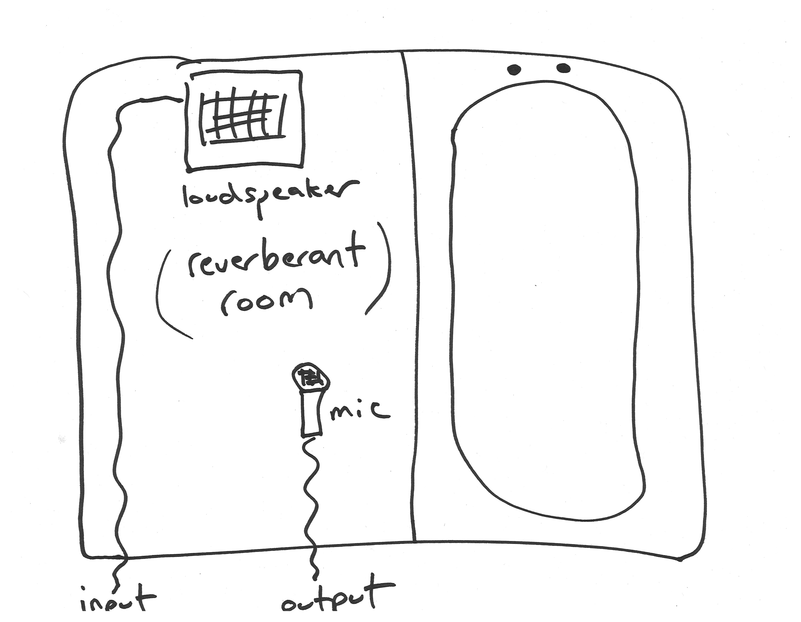
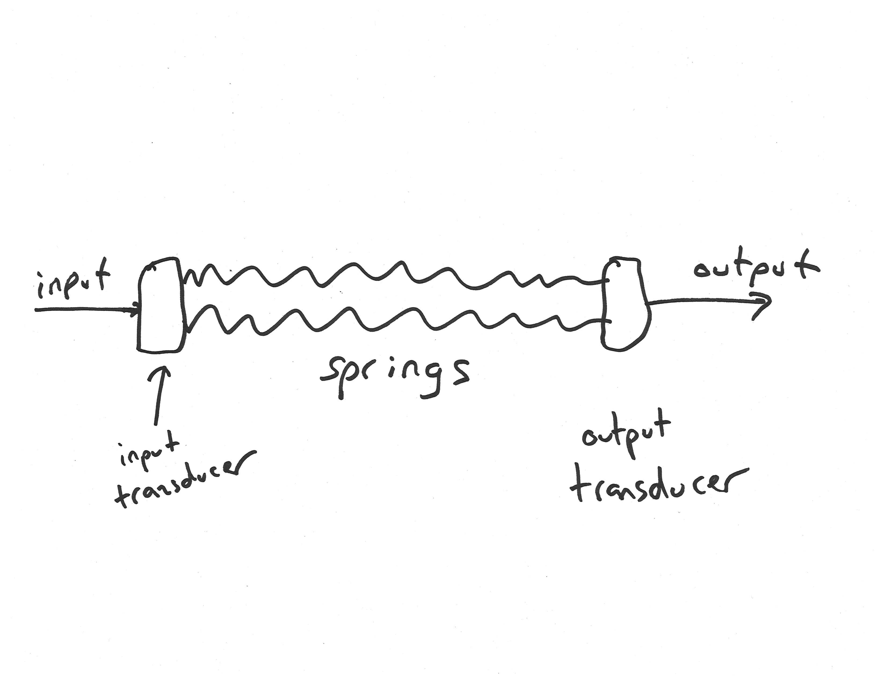
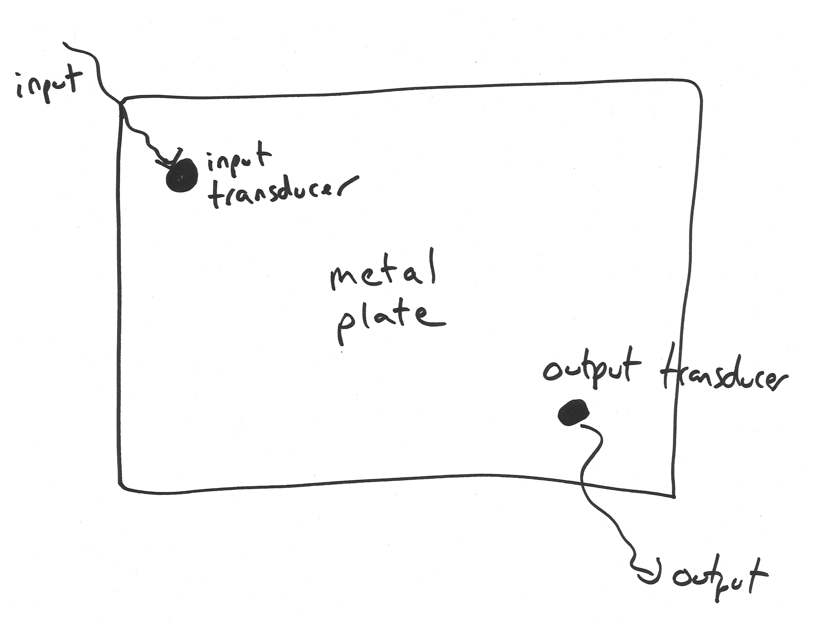
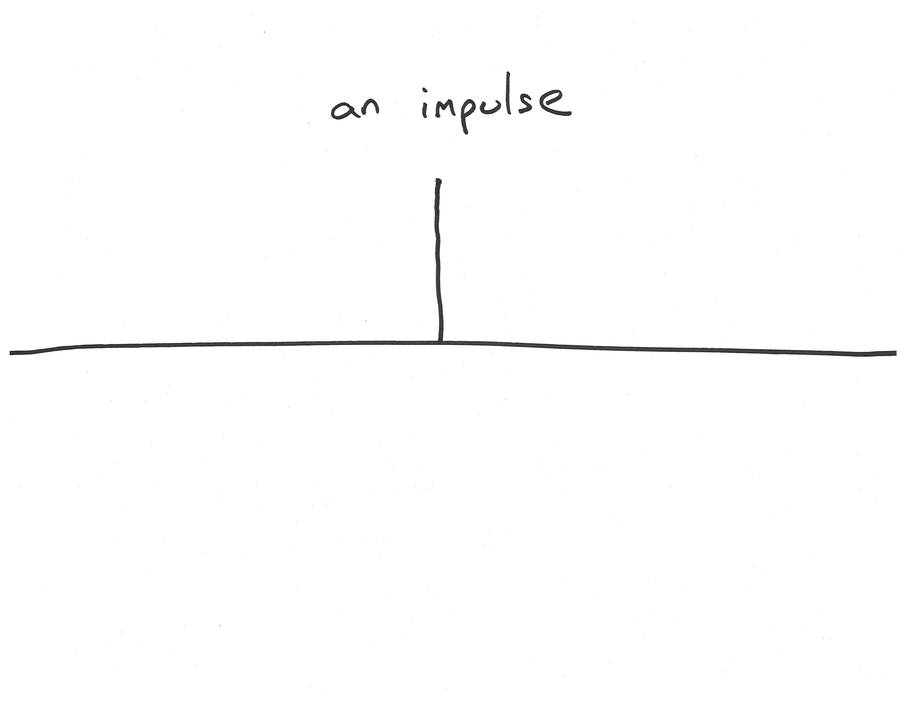
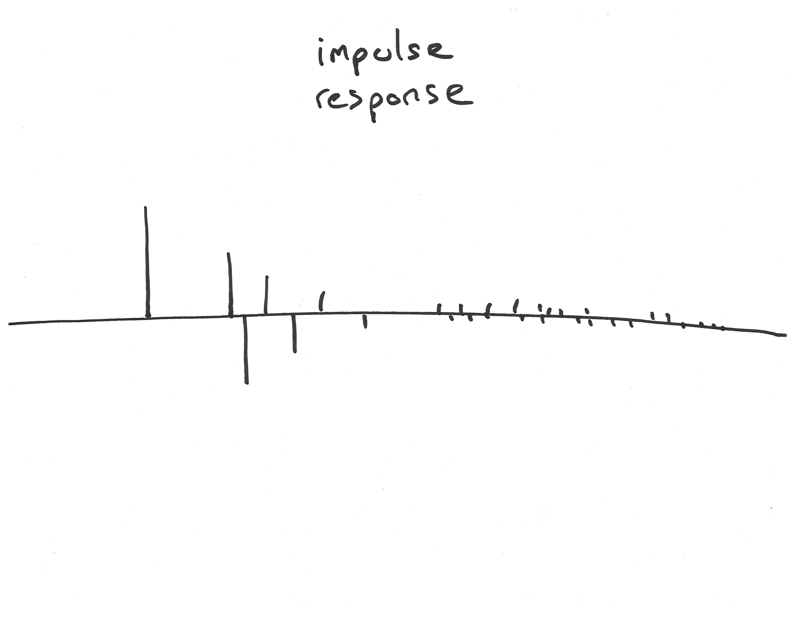

MEDIAART 2G03: Reverberation and Aural Architecture
Reverberation and Aural Architecture
I'd like to start by observing that sound is inherently spatial, especially when, but not only when, we are talking about acoustic sound (sound as vibrating air or vibrating objects). If we think about something like a string on a guitar or a violin, or the string inside of a piano, or even perhaps our vocal cords as a kind of string, this is not simply a point in the air that is vibrating, but rather a whole series of connected points that are vibrating together in a complex pattern. Vibrations go back and forth down the string generally.
If we think instead about something like a drum, or the head of a drum, a two-dimensional circular surface (perhaps), then we strike the drum: then those pressure waves, those vibrations, move out across the surface of the drum. When we think about these examples, it becomes clear that we don't ever really have sound in one point in space, we always have sound at lots of different connected points in space.
We might even think about the situation of a sound source and a listener; they can't be in the same place, the sound source has to be at some distance from the point that we're calling the listener, whether that's a human ear or a microphone. And the energy from that sound source has to travel through space in order to arrive at the ear. It's clear that we're always dealing with a spatial phenomenon.
When we're talking about reverberation (“reverb”, for short), we're usually talking more narrowly about all of the phenomena that come from the reflection and absorption by nearby surfaces of sound energy. If we imagine that we're talking and listening in a room: the room might have a wall that's made of brick, and a door that's made of glass, and a floor that's made of carpet, and of course a whole bunch of air as well. When we make a sound in that room, what a listener is going to get is not going to be that sound as it exists at its point of origin, rather the listener is going toget that sound as modulated by all of the reflections and absorptions that happened as that sound energy bounces around this real space with all of its real materials.
This has an impact on really all of the stages and many of the tasks of audio work. For example, whenever we are making recordings, our recordings happen in space, and our recordings are going to receive all those reflections and absorptions that are inherent in the spaces that we're working in. Also, if we're recording, we might deliberately choose to record in a space that has a particular set of surfaces, and a particular profile of reflection and absorption because we like the sound, or because it serves some creative need. When we're mixing or transforming an audio project, we might deliberately want to add certain kinds of simulated or real reflections and absorptions to the work that we're doing. In another module we'll talk about artificial reverberation.
But even if we don't want to add artificial reverberation, it still affects our work at the mixing and transformation stage of a project, because while we're working on mixing or transforming a project, we again are listening in some kind of space. And as the sounds that we're listening to – let’s say coming out of loudspeakers while we're working – they also bounce around the room in which we're listening and are absorbed to some or other extent by the walls and the other surfaces of that room. So it plays a potentially distorting role with respect to what is in the underlying “text” of the audio that we're working on.
And a similar thing happens when a listener receives the audio signals that we're working on for them. Our listeners may listen to our sounds in an environment that we control, or they may listen to it in all kinds of diverse environments as part of their everyday lives. In all cases though, the sounds that are reprojected out of loudspeakers or even headphones, are subject to the acoustics and the reflections and the absorptions inherent in all of those situations.
So reverb is important, and it's something that we can engage with in different ways, and that we can't escape from. It's also part of a larger set of questions: what some are starting to call, "aural architecture," after this influential book by Barry Blesser and Linda-Ruth Salter, "Spaces Speak, Are You Listening?: Experiencing Aural Architecture”. And that book really sketches the outline of a broad interdisciplinary field of study that different stakeholders might be interested in for different reasons and at different times.
For example, sound artists might be really interested in the way that sound behaves in different spaces and different architectures, because they want to imitate those effects, or because they want to take advantage of them, or exaggerate them, or choose to work in certain spaces in their work. Acousticians are people who stereotypically are hired to do things that control the acoustics of new spaces that are built, like new lecture halls, or concert halls, or perhaps offices or other everyday spaces. And they too have to think about the complex set of effects that come from the way that architecture and the built and not-built environment affects what we hear. Public communicators, teachers and performers, might be interested in aural architecture, because their performances before an audience don't arrive at the audience in some direct form, they arrive in a way that is modulated by the space in which they are speaking or performing. And perhaps anthropologists will be interested in aural architecture too. After all, across a broad cross-section of different human cultures, we see cultures creating spaces that exaggerate certain characteristics of sound, or which suppress reverberation, or which exaggerate reverberation in particular ways. Many human cultures have been aware of and engaged with aural architecture for a very long time.
A 3-Stage Model of Reverberation
I want to turn back now to reverberation, to the specific set of things that happen when we make a sound in a space where there are surfaces around that can reflect and absorb that acoustic energy. There are lots of ways we could think about this, but for the purposes of this course, I'm going to ask us to think about a three-stage model of reverberation.

Imagine first of all, that we have a sound source somewhere in a room and imagine somewhere else we have a listener, which could be a human ear or it could be a microphone, as shown in the diagram [above]. Then one other thing that we need to take as a given before talking through this three-stage model, is that the speed of sound is relatively constant (for example, at sea level with dry air and 20 degrees Celsius, the speed of sound is 343 meters per second; that's a very useful number to remember because occasionally making calculations with that number can help solve or illuminate certain problems). But to make that story short, sound essentially has a constant speed in a given situation, without regard to frequency. So that means that how long it takes a sound to go a certain distance, is something that we can predict; and that when distances are longer, it will take longer for the sound energy to get there.
Stage One - “Direct Wave”: So we have a source that puts some sound energy into a room, and that sound energy is going to go out in all directions from the source. But from the standpoint of the listener, the first thing that's going to happen, their first possibility for awareness of this sound energy, is going to be the awareness that results from this direct wave arriving at them on theshortest path between the source and the listener. If the listener is somewhere in the room and the source is somewhere in the room, there's going to be some kind of shortest path between the two. And because the speed of sound is constant, the energy is going to arrive along that path, before it arrives along any other paths.
This second diagram [below] shows a graph of what the listener receives. If the original sound has the shape of an impulse that goes quickly up and down, then the direct wave that arrives at the listener a moment later will have a similar shape. Of course, the energy of the sound source at its original location will be greater than the energy when it arrives as the direct wave at the listener. So that's the first thing that happens: a “direct wave” arrives at the listener.

Stage Two - “Early Reflections”: And then typically, there are a bunch of early reflections that arrive. The first diagram [above the diagram above] shows an example of an early reflection path. It's a reflection off a wall, it's pretty close to the listener and reasonably close to the source, and if we look at this path that it follows, we can see that this path is somewhat longer than the path of the direct wave, but not too much longer. And if we were to sketch out a lot of the other possible single reflection paths, we would find that they would all be pretty similar lengths. So, a moment after the direct wave, we get a bunch of “early reflections” that arrive across different reflection paths.
Stage Three - “Late Reflections”: And then somewhat arbitrarily, we transition into a third stage which we're calling "late reflections." We get these reflections that go off multiple sources, they take much, much longer to arrive at the listener, and there are potentially many more of these paths if we think about it. So there's probably lots of these reflections, they have to go a much further distance now in order to arrive at the listener, so they're much smaller, but there's many of them and they all kind of blend together and we get the late reflections.
Now in the acoustics of the real world, things are not always as neatly divided as these these three phases, but it's still a pretty good approximation for understanding what's going on. And one other thing I want to say about this three-stage model is that (in what we have said so far) we have really emphasized reflection, but actually every time the sound energy reaches one of these surfaces, the surfaces also absorb some acoustic energy. How much acoustic energy they absorb depends on the frequency, and it also depends on the nature of the surface; different materials will absorb more and and other materials will absorb less. For example, stone is something that is very, very reflective, so it doesn't absorb much at most frequencies. Carpet is something that is pretty absorptive, so it tends to absorb a lot of acoustic energy, and so on and so forth.
The actual pattern of direct wave and early reflections and late reflections that arrive at the listener, is a reflection of the space (its shape), it's a reflection of the position of the source and listener in that space, and it's a reflection of the characteristics of all those materials as well. So there's a lot of complexity there, but our brain is able to pay attention to that and gives us distinct spatial perceptions and impressions from all of that complexity, which, is a kind of an amazing thing, but also not that surprising when you think about the fact that we have evolved in a world that is full of sound and full of listening. So it's not that surprising that we might hear lots of these things.
Measurement and description of reverb
One of the things that might be heard in reverberation, is how long it takes for the sound (for all those reflections) to decay away. And there's a standard measurement that is sometimes used to describe this situation, called RT60, and it's the time that it takes for the sound pressure level to decrease by 60 dB in a given spatial configuration of source, room and listener.
For example, imagine we make some kind of loud sound (90 dB SPL) and then stop making that sound, and now that sound continues to reverberate around the room for some period of time. Eventually, we get to a point where all of those reflections and all of that reverberation, the level of that has come down to 30 dB SPL. So the time that it takes to go from that 90 dB SPL level to the 30 dB SPL level, we would call that the RT60 for this particular situation. This is also sometimes abbreviated T60 and it's frequency dependent. Every space will have at least somewhat different RT60 at different frequencies, because the materials in the room respond differently at different frequencies. The air also responds differently at different frequencies; high frequencies are attenuated more rapidly as sound travels through the air.

Typical values for RT60 are in the range of 0 to 15 seconds or so. 15 seconds would be a very, very, very long reverberation, like a massive cathedral or a huge very reflective cave or something like that. And the values that we might get for sort of everyday things like offices and rooms and stuff like that, will be often under a half second or under even smaller amounts than that.
One more thing to note about RT60: this measurement was introduced by a pioneer of architectural acoustics working at the end of the 19th century: Wallace Clements Sabine. And Sabine introduced a formula at that time that related the reverb time of a room to its surface area, to its volume, and t various coefficients that reflected the characteristics of the surfaces around, and that work has continued to be very influential for acousticians and for people who are designing acoustic spaces.
But I think for people that are working creatively with sound, it's important to keep in mind that we might hear a lot of other things beyond RT60 time, beyond just the “time” of reverb. For example, we might also hear really important cues about the nature of materials, about the difference in reverberation between wood and glass and stone and metal and fabric and snow and water, and these things can be really meaningful to us as artists and as listeners. We might be able to hear cues about the distances between objects and scenes, and between objects and surfaces and scenes. We might hear boundary proximity effects; for example, if we walk at a wall with our eyes closed but our ears open, we may be able to find that just by our sense of hearing alone, we're able to stop without hitting the wall because we hear how the acoustics change when we're in really close proximity to that boundary. There are things like echoes that are often given great cultural significance. We might also hear localised differences in reverberation: Rooms don't have the same reverb characteristics in every position in them. And really what we're looking at is a relationship between a sound source and a listener in a particular room, and as we move about the room (as we move about the space), we can become aware of the way those properties change. These are all things that people working with sound creatively can exploit for their own artistic and communicative purposes.
Artificial Reverberation
One of the earliest methods of simulating reverb using audio technology involves taking a room (a very reverberant room), and injecting sound into it, and then putting a microphone in that same room and re-recording the sound, taking the signal from that microphone. And so basically that’s using the real reverberation of the space and just “capturing” it. And so often this was done in bathrooms because they typically have a lot of reflective surfaces in them, which is I guess why people like to sing in the shower and enjoy that reverb. Also, a lot of early studio spaces, the bathroom might have been a room that was used somewhat infrequently, and so they could put a loudspeaker on microphone apparatus in that room and then use it to simulate reverberation.

The advantages and disadvantages of this approach are worth thinking about. One advantage of this approach is that it's a very realistic way of simulating a very particular reverb. You definitely get from this, a recording of how that sound would have sounded, had it been made in that space originally. Disadvantages are that it's a very specific room that you're dealing with, it's also not very portable, and you also have to be somewhat careful that there aren't other noises in the room because those are obviously going to get picked up by that microphone as well. So an interesting idea, and occasionally useful, but not very practical.
Before moving on, I do want to mention that occasionally you will see artistic projects that continue the type of design that you see here. For example, there was for some time, a project in Montreal where a huge grain silo was hooked up to the Internet in such a way that people could inject sounds into it, and then listen back to those sounds as they reverberated around this massive grain silo; it was kind of a cool project.
Spring and plate reverbs are two more portable, but still mechanical ways of simulating reverb.
The spring reverb in particular (the first one we'll talk about) is something that you'll still encounter nowadays, often built into guitar amplifiers and things like that. The basic idea is that you have an input signal and you have some kind of input transducer that turns the input signal into mechanical vibration. And it's connected to a series of pretty tight springs, and at the end of those tight springs is another output transducer that turns the vibration of the springs back into electrical energy. And so you can kind of imagine what happens if we feed a sound signal into the input; the spring at this point starts to vibrate with the shape of the sound signal. But then those vibrations go down the spring and they kind of echo and repeat back and forth. And we get a kind of simulation of reverberation. We get a kind of simulation of that decay pattern of reverberation. We get a kind of simulation of that fact that when sounds reverberate around a space, the energy continues to have a life after its initial moment.

Spring reverbs are relatively portable. They can be built in relatively small boxes and inserted in guitar amplifiers. The disadvantage of this approach is that it's certainly not a very realistic simulation of real-world reverberation. The ways that sound moves around a three-dimensional space with all kinds of different surfaces in it, that's not very similar to the way that vibrations move through a spring. Also (and anyone who's ever used one of the guitar amplifiers that has these spring reverbs in it will know this), if you knock the spring reverb or make a bump on the floor nearby it, that also goes into your output signal, and so you have to be a little bit careful with it. So somewhat inflexible and also somewhat sensitive to other vibrations in the environment; but simple, mechanical, and a way that people have been simulating reverb for a very long time.
The plate reverb is sort of the same idea as the spring reverb, but addresses one of the limitations of the spring reverb by adding an extra dimension of vibration. The spring, it's sort of obvious that it's not like a room because it's just a single dimension (length) across which the signal vibrates. The metal plate (the plate reverb) corrects this by instead having a transducer connected somewhere on a big two-dimensional metal plate, an output transducer connected somewhere else on that plate, and now when acoustic energy (electrical energy) goes into the transducer, it's translated into mechanical energy. And the vibrations from that mechanical energy are allowed to bounce all around this big metal plate, and we pick up the result of that as the output. So it tends to be somewhat more realistic, somewhat more like the response of rooms and things like that. However the disadvantage of this is that you need a huge metal plate for this to work, so it's typically not very portable, very expensive, and just like the spring reverb, it is somewhat inflexible and sensitive to other things going on in the environment. But it was common in a certain period, for high-end studios and other places where creative things were being done with audio, for them to have a plate reverb of some kind.

Schroeder reverberation
Leaving behind the early developments in artificial reverb, we transition now to talking about the two methods with which reverb is commonly simulated in software in our own time, and there are two that we need to keep track of: Schroeder reverb (the focus of this module) and convolution reverb (covered in another module).
The first of the two ways in which reverb is commonly simulated in software, is called the Schroeder reverb, or the Schroeder reverberator. And the Schroeder reverberator is basically a network of many, many filters, specifically two specialized kinds of filters: comb filters and all-pass filters (but we don't need to worry too much about the details of that right now). The input sound goes into this network of filters, and an output sound is produced from the mixture of what goes and comes out of those various filters. The network of filters basically simulate the effect of the sound being repeated in complicated ways in time. So this is not a direct simulation of any physical situation, so in that sense, it's a little bit like the spring and plate reverb. But unlike the spring and plate reverb, what we have is a complex network of these filters, and so it's kind of having like lots of different spring reverbs and plate reverbs all being combined in carefully tuned ways. One of the advantages of this kind of reverb, is that it's computationally very cheap. What that means is that if we have a complex project with lots of different tracks running simultaneously, all with their own effects, it's probably going to be absolutely no problem to have as many of these reverbs (these Schroeder reverb plugins) as we want running, because they're so computationally cheap.
Below is a screenshot of Reaper's ReaVerbate plug-in, which is the Schroeder reverb that's built into Reaper. And this allows us to talk a little bit about the common parameters of Schroeder reverbs. There's often a parameter called "room size" that we can increase or decrease, and which often translates really closely to our perception of the reverb time: how long it takes for the artificial reverb to decay when we present it with an input sound. And another key parameter is the "wet" and "dry" controls. The "dry" control is basically how much gain is applied to a straight-up copy of the input sound, and the "wet" control is how much gain is applied to the output of that network of filters. So by manipulating the room size or "reverb time" parameter, and the "wet/dry" parameters, we can actually do a reasonably good job of simulating lots of different reverb situations.
<img src="../reaper-reverbate-schroeder-reverb.png" alt='Screenshot of Reaper's Reaverbate plugin, described in text' style="width: 100%"/>
Now, you'll find lots of different variations on the Schroeder reverb because what we're always dealing with is a couple of parameters that control lots of parameters of a network of filters that we don't see. So it's common to see other parameters like "damping" or "dampening" that typically control some kind of simulation of the higher frequencies of sounds decaying over time. Reaper's plug-in has a "low-pass" and "high-pass" control, as well as some sort of control over stereo effects, some sort of control over the way different signals go to the left and right channels of our output. We can see that Reaper's ReaVerbate has a "stereo width" parameter. So quite a few variables to control here... if we count what's on Reaper's plugin, there are 8 distinct parameters. And the manipulation of any of those parameters will definitely give us some audibly different results.
Convolution reverb
We're going to move now to the second major way in which reverb is simulated with software nowadays, and this is called "convolution" or "convolution reverb." And we're going to get to explaining how convolution reverb works in a series of steps.
Let's start by considering the definition of an impulse. An impulse is a signal, or a moment in a signal, where we go from nothing to something right away. And we could approximate an impulse in the acoustics of the real world by making a spark plug fire, or maybe even more roughly approximated with something like popping a balloon, or I suppose even clapping our hands. An impulse is a single spike of energy that happens at a certain point in time:

If we make an impulse in a room (with a spark plug, or a balloon, or by clapping), and somewhere else in that room we have a listener, we know from other things that we've seen about how the acoustics of rooms work, that at a certain time later, we're going to get a slightly reduced, slightly delayed direct wave that reflects that impulse. And that sometime after that, shortly after that, we're going to start to get various early reflections of that wave. And at some time after, that microphone or listener is going to get some even smaller and more densely packed late reflections of that impulse. If we make an impulse and then we record what a microphone hears in a space in response to that impulse, what we would have might be something that would look a little bit like this diagram [below], and we could call that an "impulse response."

The impulse response would be a kind of measurement of the way that reverberation works in that particular room, in that particular arrangement of source and listener. Now the key thing then to understanding how this lets us simulate reverb, is to realize that in a digital audio signal (such as the signal we have in a digital audio file that we've recorded), each individual measurement in the file is like an impulse, but with a different size and (if you like) direction (like some impulses go up and some impulses go down). So what we could do with the impulse response, is we could take every sample of some kind of arbitrary signal that we have, like a sound that we want to add reverb to, and we could apply (copy) the impulse response accordingly. For example, if we had an input sample (an input impulse) that was relatively tiny, we could extend out from that a copy of the impulse response that was also similarly tiny, so it would kind of decay away, but its overall size would be determined by how big that small impulse was. And let's say that we had at another moment, we have a sample in our input sound that is quite large and it goes downwards, well that becomes a quite large and flipped upside down version of the impulse response. And so we could do that for every sample (every measurement) in our file; we could mix together all those impulse responses, and when we do that, what we're doing is called "convolution." And what we would get is essentially a simulation (a very precise simulation) of what you would get if you have made that sound at the location where the impulse happened (in the room where you recorded the impulse response).
Reaper has a plugin for a convolution reverb as well and this is its ReaVerb plugin [screenshot below]. It looks somewhat different than the Schroeder reverberator that we saw earlier, and it's got this interface in the middle where you can click "add" and then "pick file" and you can direct it to an audio file which it loads and which it interprets as an impulse response. And I've loaded one of those impulse responses here before taking this screen shot, and we can kind of guess that it's an impulse response because we see it has this characteristic shape of being kind of dense and high at the beginning, and then quickly decaying away to nothing.
<img src="../reaper-reaverb-reverb.png" alt='Screenshot of Reaper's Reaverb plugin as described in text ' style="width: 100%"/>
Convolution reverb uses impulse responses to create a precise simulation of a specific source space and listener relationship. And the kind of neat thing about this is that these impulse responses, is that we can record them ourselves and share them online with other people, and we can find the impulse responses that other people can make. For some time in the late 1990s in the heyday of the domestic Internet, I had found a site where someone was freely sharing impulse responses that they had recorded or collected from around the world. And there was a particular subway station in Sweden that I used as a reverberation in lots of pieces through the magic of convolution reverb. I had never been to that subway station, nor have I ever been to Sweden, but I was able to simulate sounds being in that space using convolution reverb (quite fun).
The main parameters of convolution reverb are typically somewhat more limited than the Schroeder reverb. We'll have our choice of impulse response, like that file (like my file for the Swedish subway station), and then we'll be able to control the wet vs. dry levels, and often there isn't much more beyond that. By contrast, the Schroeder reverberator typically has more parameters to control, more flexibility in that sense, but usually less realism. We can sometimes transform the impulse responses that we use with convolution reverb, but this is still going to be somewhat less fluid and flexible than just changing the parameters of a Schroeder reverb.
The final thing that I want to say about convolution reverb to encourage experimentation, is that we can creatively misuse the convolution reverb. Instead of using a proper impulse response (one of those things that was recorded by making an impulse in a space and then seeing what you get), we could actually use any sound as an impulse. And when we do that, we'll get strange sounds often, and what they will be is a kind of product of whatever frequencies were in both recordings; in other words, the impulse response and the input sound. So a lot of fun experimenting with those creative possibilities.